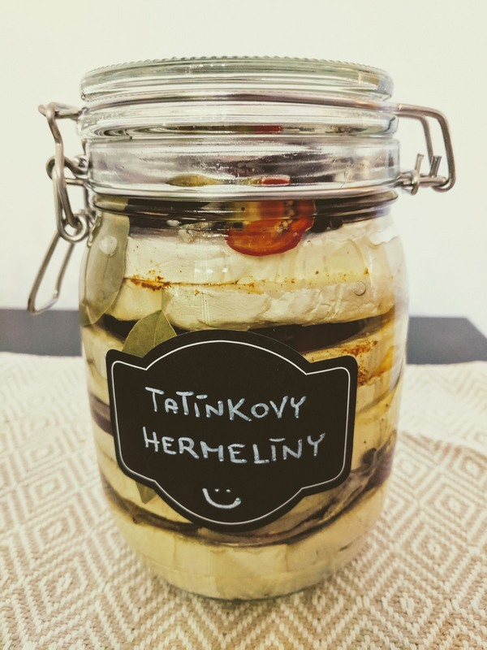
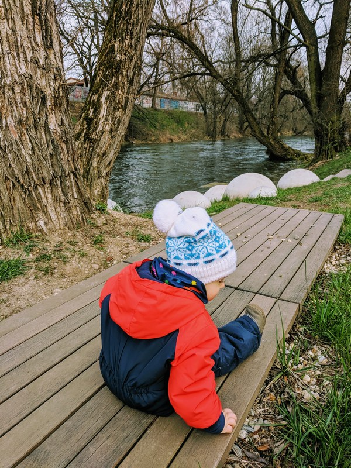
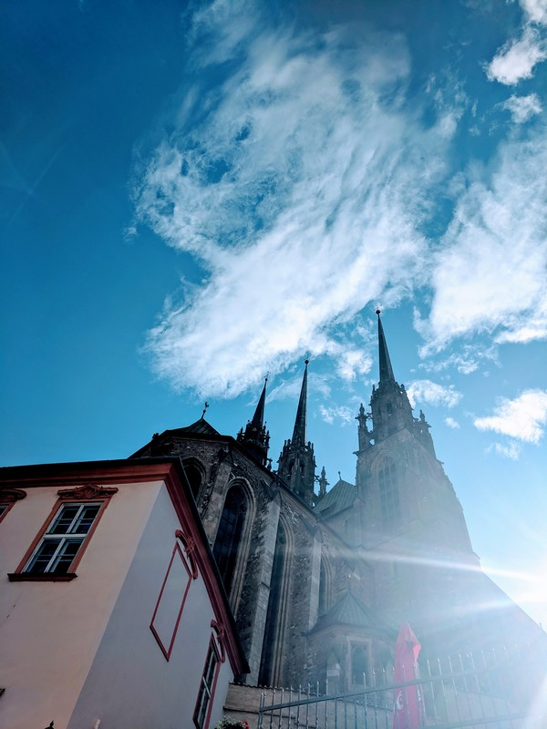

Na první pohled by se dalo říct, že všechno to zajímavé, co normálně do této rubriky dávám, už je obsaženo v článku o našich výletech mimo civilizaci. Že jsme krom toho nic jiného nezažili. Nebylo kde. Svět se smrsknul na těch našich pár bezpečných metrů čtverečních, kde jsme spolu byli přes dva měsíce “zavření”. Někdy nám to všem lezlo na mozek, ale jindy jsem se až sama divila, jak hladce některé věci běžely a co všechno jsme spolu za těch několik týdnů dokázali. Proto v rámci psychohygieny jen malé shrnutí, jak dobře jsme se - navzdory všemu - tohle jaro měli :-)
- Byli jsme víc než kdy dřív spolu. Byli jsme POŘÁD spolu :) Kolikrát jsem jen za ty dva roky nadávala, jak jsem tu celé dny na O. sama, jak by O. prospělo, kdyby trávil víc času s tátou. A vesmír vyslyšel mé prosby.
- Spotřebovávali jsme s mnohem větším rozmyslem - s tím, jak nebylo možné některé věci sehnat online a okamžitě, jak jsme byli zvyklí, pozorovala jsem sama na sobě, že mnohem míň plýtvám jídlem. Prošlou věc, kterou bych jindy bez rozmyslu hodila do koše, jsem teď vždycky sama zhodnotila bez ohledu na datum na obalu. S tím souvisí i to, že jídlo a vaření jsme víc plánovali a protože to bylo maximálně v mé režii, jedli jsme zdravěji. Míň masa, víc trvanlivých věcí jako luštěniny nebo rýže. Víc jsme si vážili čerstvého ovoce a zeleniny a pečiva, které se najednou stalo nedostatkovým zbožím.

- Začala jsem po nekonečně dlouhé době zase pravidelně cvičit - jógu. Dokonce se mi tu a tam stane, že si jdu zacvičit hned ráno po probuzení - do té doby pro mě naprosté sci-fi :D! Předsevzetí jsem si dala tedy už na začátku března, ještě než nastala karanténa, ale právě aktuální situace pro mě asi byla dobrým impulsem k tomu vytrvat. Cvičení je jeden z mých návyků, který zatím úspěšně přežívá i po karanténě, tak snad to vydrží :-)
- Myslím, že významný pokles výdajů pocítil asi každý z nás. Tím, že jsem vařila doma pro všechny, dost jsme ušetřili. Žádné restaurace, žádná kafíčka, žádné impulzivní nákupy ve slevách. Obstarávali jsme si online jen to opravdu nejnutnější a myslím, že tahleta pauza od konzumního života nám taky docela prospěla.
- Návrat k přírodě. Tahle slova ve mně rezonují, když přemýšlím nad významem toho všeho. Jak nám tak “obyčejná” věc, jako procházka v lese, vždycky zlepšila náladu. Jak bylo krásný sundat si v přírodě roušku a vdechovat jaro. A dokonce jsem začala na balkoně pěstovat rajčata :-D!

- Vděčnost. Za to, že jsme “zamlada” měli možnost bez strachu procestovat tolik míst. Za to, že jsem před dvěma lety mohla mít u porodu svého muže. Za to, že jsem nerodila dítě do světa plného strachu a otazníků, co bude dál. (Teď, s odstupem pár týdnů, když už je všechno zase relativně “v pořádku” to zní možná až moc hystericky, ale vzpomeňte si na atmosféru koncem března.) Za to, že dnes, tady a teď, jsme zdraví. Naši zaměstnavatelé se vzniklou krizí s největší pravděpodobností protlučou a nemusíme se tak bát o práci ani řešit akutní existenciální nouzi. Vděčnost za to, že se máme.
